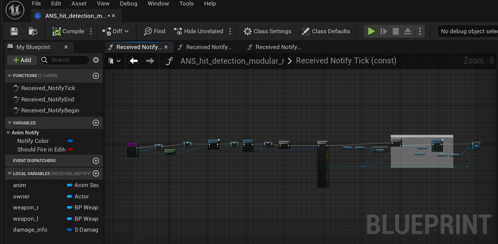
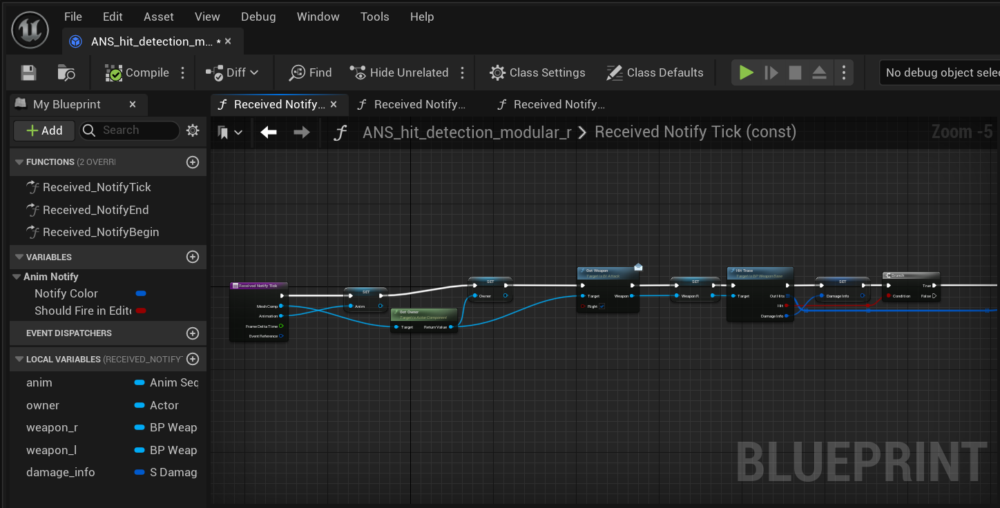
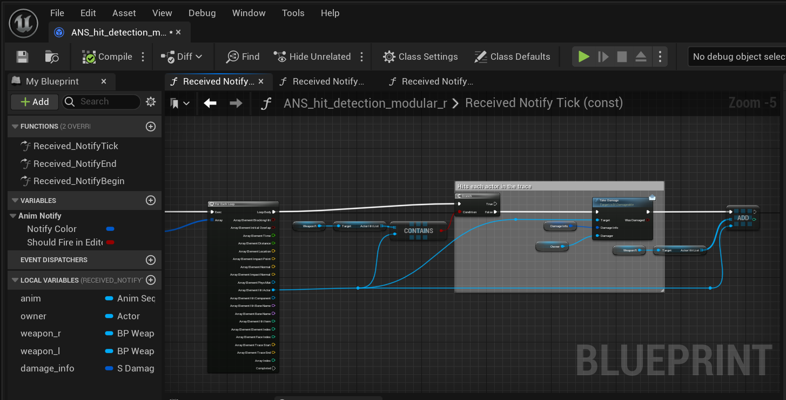
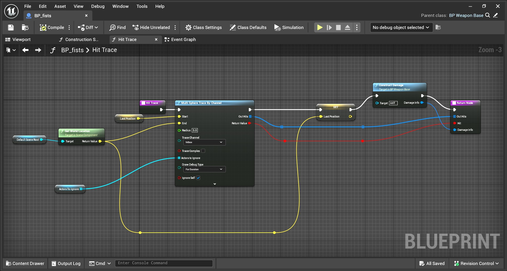
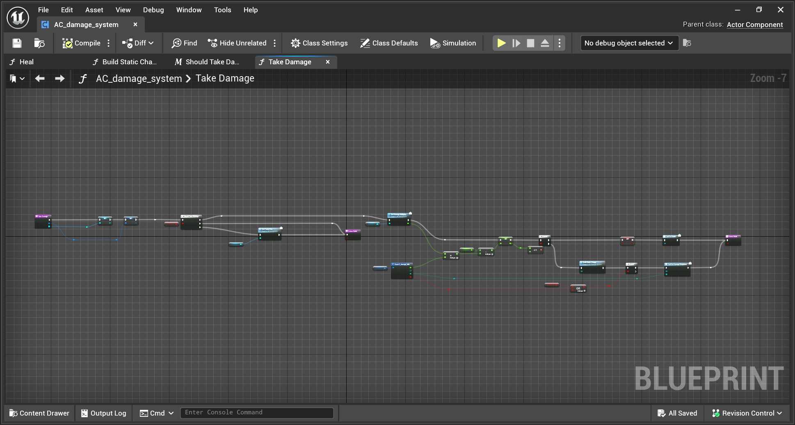
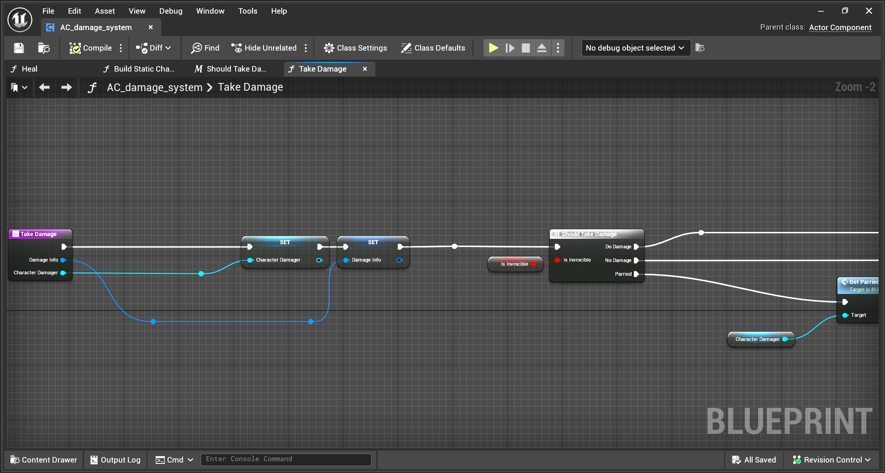
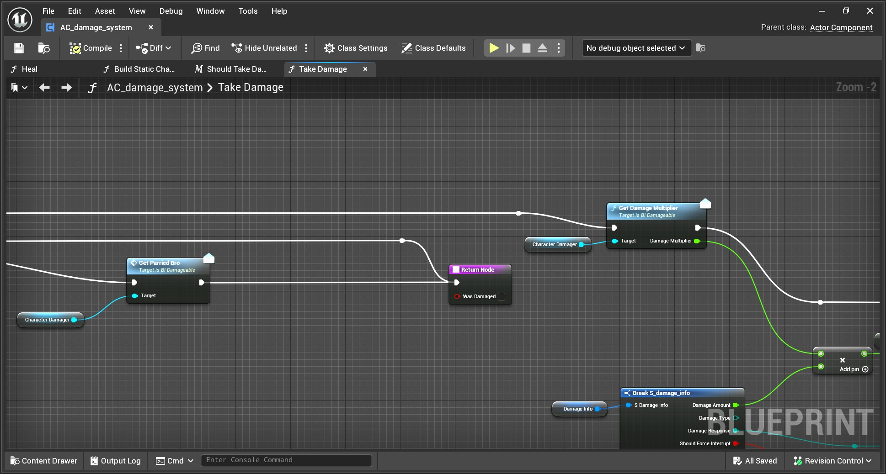
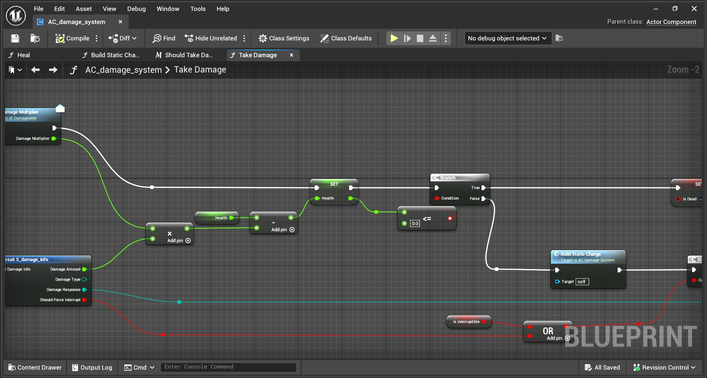
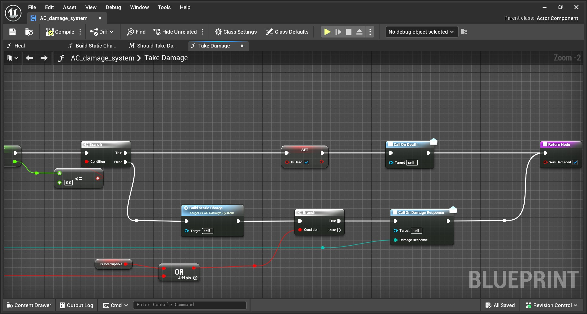

Game Development Page
Project KYE Simulation
C++ Code
Developed using Unreal Engine 5. Most of it is programmed in Blueprints whilst some features like dodging and Attack data assets are in C++.
Video Demonstration
Images of certain areas of Blueprint logic
        